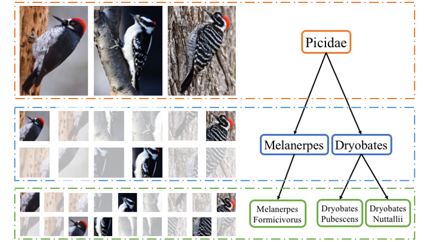
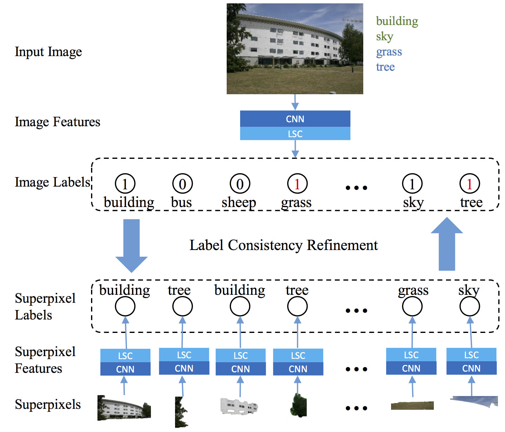

|
I am a first year Ph.D. student in Computer Science Department at UC Berkeley, advised by Prof. Trevor Darrell . Before coming to Bay Area, I graduated from School of Computer Science at Fudan University in June 2016, working with Professor Prof. Yugang Jiang, Prof. Zheng Zhang and Prof. Xiangyang Xue. |

|
|  |
abstract |
bibtex |
poster
Fine-grained categorization, which aims to distinguish subordinate-level categories such as bird species or dog breeds, is an extremely challenging task. This is due to two main issues: how to localize discriminative regions for recognition and how to learn sophisticated features for representation. Neither of them is easy to handle if there is insufficient labeled data. We leverage the fact that a subordinate-level object already has other labels in its ontology tree. These " free " labels can be used to train a series of CNN-based classifiers, each specialized at one grain level. The internal representations of these networks have different region of interests, allowing the construction of multi-grained descriptors that encode informative and discriminative features covering all the grain levels. Our multiple granularity framework can be learned with the weakest supervision, requiring only image-level label and avoiding the use of labor-intensive bounding box or part annotations. Experimental results on three challenging fine-grained image datasets demonstrate that our approach outperforms state-of-the-art algorithms, including those requiring strong labels. |
|  |
abstract |
bibtex |
extended abstract
Image semantic segmentation is the task of partitioning image into several regions based on semantic concepts. In this paper, we learn a weakly supervised semantic segmentation model from social images whose labels are not pixellevel but image-level; furthermore, these labels might be noisy. We present a joint conditional random field model leveraging various contexts to address this issue. More specifically, we extract global and local features in multiple scales by convolutional neural network and topic model. Inter-label correlations are captured by visual contextual cues and label co-occurrence statistics. The label consistency between image-level and pixel-level is finally achieved by iterative refinement. Experimental results on two realworld image datasets PASCAL VOC2007 and SIFT-Flow demonstrate that the proposed approach outperforms stateof-the-art weakly supervised methods and even achieves accuracy comparable with fully supervised methods. |